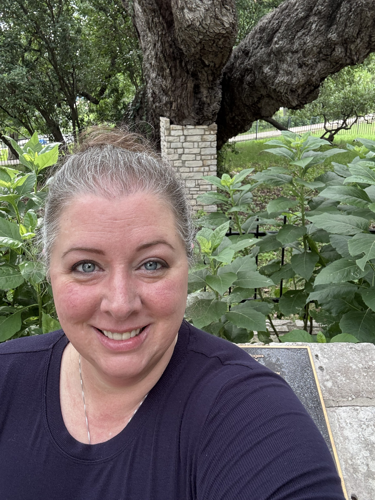
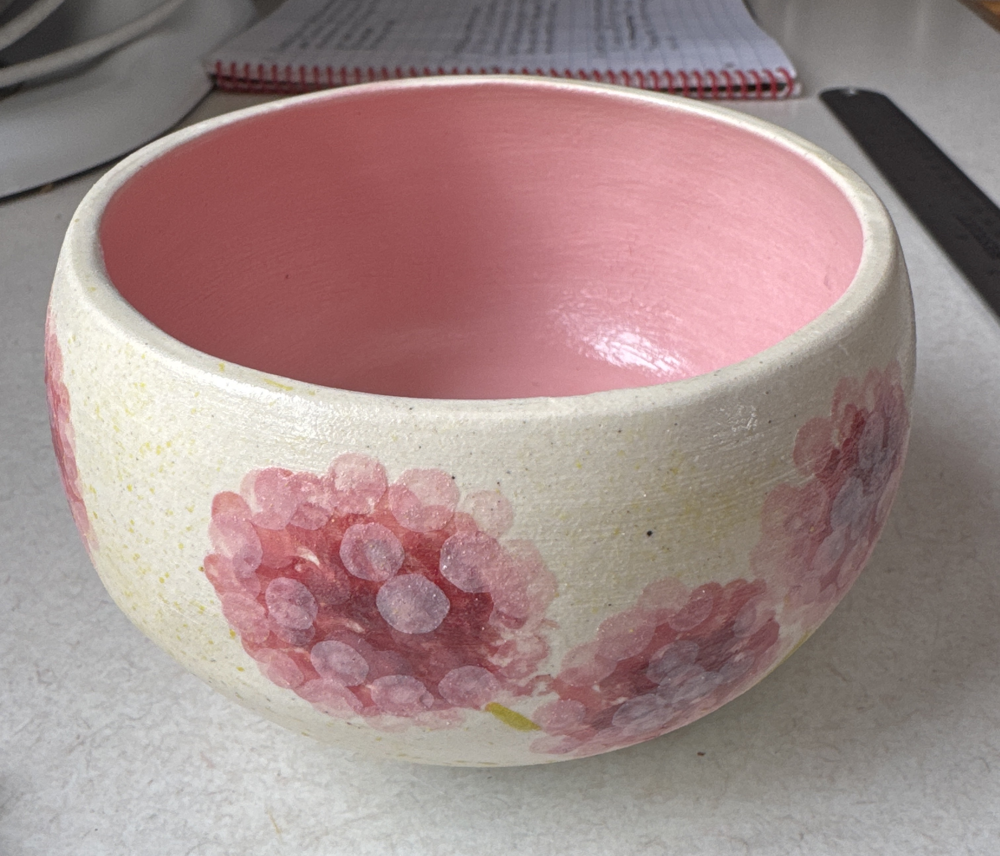
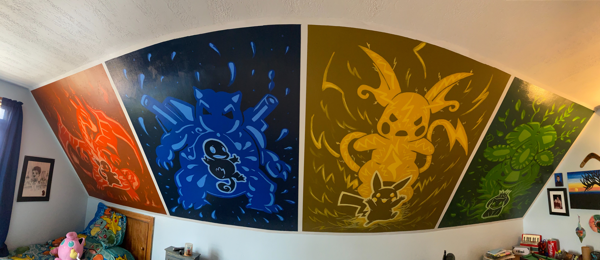
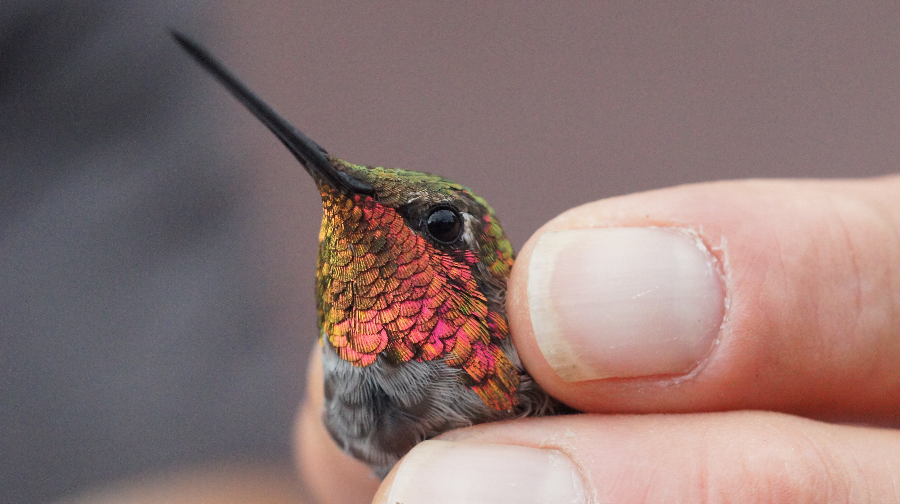

Behind the Festival
Meet the powerhouse behind the NH Monarch Festival.
Behind the Science
Beyond the personal story, here's the training, credentials, and professional background behind the science — because good conservation work is built on real experience, not just enthusiasm.
50+ hours of monarch-specific webinars, trainings, and coursework completed since 2024, including but not limited to:
Welcome! Thank you for visiting my Bio page and checking out the NH Monarch Festival website!
I'm often asked, "How did you get involved with monarchs and conservation?"
That's easy. I blame my friend, Brandon.
Every summer, I'm always outside, crawling around on the ground, taking macro photos of all the bugs, little creatures, and small flora. Years ago, I took a photo of a caterpillar I found and shared it on Facebook. Brandon told me it was a monarch caterpillar and that they were "becoming a rare sighting."
Those words sent me on a deep dive of learning and chaos I never saw coming.
It was a ripple effect. First, I learned by collecting monarch eggs and rearing them to adulthood. I observed and absorbed everything I could about the monarch life cycle, their predators, and the importance of milkweed. I started collecting data because I was curious and inquisitive. Then, I started tagging the adult butterflies, created a Monarch Waystation, and learned about building proper habitat.
Then I learned how monarchs are an "indicator" species: they "indicate" how well an ecosystem (and humans) are doing. I learned how chemicals affect monarchs and how those chemcials affect us. That led to me making some life style changes and becoming healthier. Which, in turn, led down the rabbit hole of how harmful pesticides, insecticides, and other-cides really are.
And then, I learned what real conservation is and why it's so important. Monarchs have faced incredible challenges with habitat loss. So, I learned how to grow a meadow. And then, I saw them! All the other wonderful and unique bugs and pollinators! My eyes opened to the little details. My appreciation of nature and the ecosystem around me grew. It wasn't just the monarchs that needed help.
And then, I learned about the NH Monarch Festival and the Millers' conservation efforts. I wasn't able to attend my first festival because I was recovering from surgery, but I did provide the Millers a few butterflies for their release ceremony. Then they invited me to participate in the Festival with my own science station. I brought live specimens and microscopes. I gave presentations on how to test the health of butterflies, take measurements and collect data, and tag butterflies. The Millers and I worked together for a few years to create a memorable experience for attendees. I'm greatful for all the things Donna and Jim taught me.
And then...
At the end of the 2024 monarch season, the Millers announced their retirement from the Festival. They asked me if I would like to continue running the event. I said yes! It was an incredible (and a bit of a terrifying) honor. I hosted my first Festival in 2025. Mistakes were made, but it was a great learning experience. And it connected me the NH Audubon, which has now become a fantastic partnership.
Since 2025, I've immersed myself into all things monarch-related. I attend several monthly webinars and trainings from various conservation groups and monarch organizations. I continue to collect data and participate in community and citizen science projects. Last year, I joined the NH Audubon, volunteering with their nanotagging project. I'm working to provide research towards monarch migration. This year, I joined the Belmont Conservation Commission and hope to help the residents of my town with their conservation and habitat needs.
So, basically, what started as a comment about a caterpillar pic snowballed into this obsessive passion to do better, be better, and help better. This is my way of leaving a legacy.
I'm continually learning as much as I can and I intend to honor Jim's and Donna's commitments to conservation and educating the community. Some of my goals for the Festival's future include: connecting with other State and Local organizations, growing the Festival while still remaining true to its mission and objectives, and providing the public with training and learning opportunities outside of the event date. There are year-round learning opportunities for everyone.
Additionally, I'm working to make my personal monarch data available to researchers and build some social platforms to share monarch and milkweed knowledge with the butterfly world.
There are so many great things on the horizon!
~ Amira

Amira at the Founder's Oak in New Braunfels, Texas. 2026.
“The creation of a thousand forests is in one acorn.”
— Ralph Waldo EmersonFrequently Asked
How long have you been involved with monarchs?
Since 2020, officially.
What's your favorite part about doing all this?
The difference it makes and how fulfilling life has become.
What's your least favorite part?
The fact I don't have clones of myself to get even more stuff done. And the fact I can't learn information Matrix-style.
Why are you "The Monarch Matriarch"?
Because "Mother of Monarchs" and "Crazy Cat(erpillar) Lady" were already taken.
What did you do before becoming the Festival coordinator?
I'm involved in a lot of different science-y projects and still do most of what I did before becoming the new Festival coordinator. However, I no longer coach robotics full-time. I do, though, still volunteer, help, and mentor several NH/VT robotics programs. Occasionally, I do CAD work for a couple of clients and tutor STEM subjects. I'm also a self-taught graphics designer, registered civil engineer-in-training for the State of Texas, and author.
Do you have time for any hobbies?
Yes and always! I enjoy learning, reading, and designing--basically anything creative. I garden, travel, and paint. I dabble in woodworking, photography, and designing stuff. The thing I enjoy the most is spending time with my family and our doggos.
A Peek Outside the Festival

It's a blank slate of unlimited possibilities and what I call "my mental vacation."

I love turning a space into something special.

I try to capture the world in detail, even if the camera doesn't always succeed.
Have a question or monarch story you'd like to share? Please feel free to share!